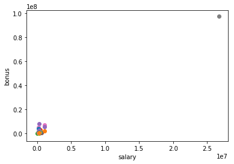
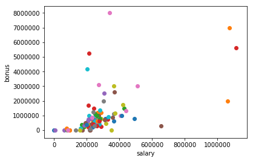
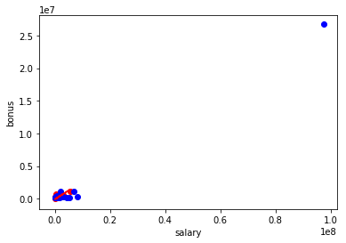
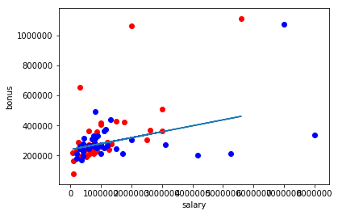
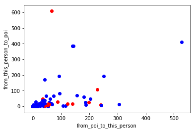
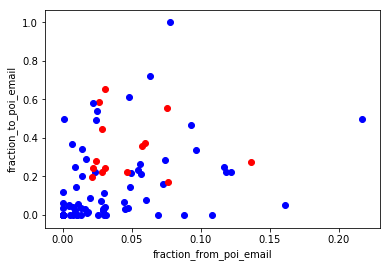

Published: Wed 18 October 2017
By Akanksha Goel
In Machine Learning .
Identify Fraud From Enron Email Dataset
In 2000, Enron was one of the largest companies in the United States in energy trading and was named as 'America's most innovative company'. By 2002, it had collapsed into bankruptcy due to widespread corporate fraud. In the resulting Federal investigation, a significant amount of typically confidential information entered into the public record, including tens of thousands of emails and detailed financial data for top executives. In this project, i have applied my machine learning skills by building a person of interest identifier based on financial and email data made public as a result of the Enron scandal. To assist, we've combined this data with a hand-generated list of persons of interest in the fraud case, which means individuals who were indicted, reached a settlement or plea deal with the government, or testified in exchange for prosecution immunity.
There are seven major steps in my project:
1. Load the Dataset and Query the dataset.
2. Outlier Detection and Removal
3. Feature Pre-processing
4. Classifier
5. Comparison of different classifier
6. Parameter Tuning
7. Validation of Classifier
Load The Dataset
"""
Starter code for exploring the Enron dataset (emails + finances);
loads up the dataset (pickled dict of dicts).
The dataset has the form:
enron_data["LASTNAME FIRSTNAME MIDDLEINITIAL"] = { features_dict }
{features_dict} is a dictionary of features associated with that person.
and here's an example to get you started:
enron_data["SKILLING JEFFREY K"]["bonus"] = 5600000
"""
import pickle
enron_data = pickle . load ( open ( "../final_project/final_project_dataset.pkl" , "r" ))
print "There are " + str ( len ( enron_data )) + " executives in Enron Dataset"
count = 0
for i in enron_data :
if ( enron_data [ i ][ "poi" ] == 1 ):
count = count + 1
print "There are " + str ( count ) + " Person of Interest(POI) and " + str (( len ( enron_data )) - ( count )) + " Non-POIs in our Dataset "
print "There are " + str ( len ( enron_data [ "SKILLING JEFFREY K" ])) + " features available for each person"
print "The 21 features are listed below:"
k = 1
features_list = [ 'poi' ]
for i in enron_data [ "SKILLING JEFFREY K" ]:
print "Feature " + str ( k ) + ": " + i
if ( i != 'poi' and type ( enron_data [ "SKILLING JEFFREY K" ][ i ]) == int ):
features_list . append ( i )
k = k + 1
print "Features_list:" + str ( features_list )
Outlier Detection and Removal
Just going through the Enron Dataset,I found Outlier when Bonus of people were plotted against the salary of person.
import pickle
import sys
import matplotlib.pyplot
sys . path . append ( "../tools/" )
from feature_format import featureFormat , targetFeatureSplit
### read in data dictionary, convert to numpy array
data_dict = pickle . load ( open ( "../final_project/final_project_dataset.pkl" , "r" ) )
features = [ "salary" , "bonus" ]
data = featureFormat ( data_dict , features , remove_any_zeroes = True )
for point in data :
salary = point [ 0 ]
bonus = point [ 1 ]
matplotlib . pyplot . scatter ( salary , bonus )
matplotlib . pyplot . xlabel ( "salary" )
matplotlib . pyplot . ylabel ( "bonus" )
matplotlib . pyplot . show ()

#finding the point of outlier
for key , value in data_dict . items ():
if value [ 'bonus' ] == data . max ():
print key
As it can be seen "TOTAL" is irrelavant point.Therefor is removed and grapg is replotted below.
data_dict . pop ( 'TOTAL' , 0 )
data = featureFormat ( data_dict , features )
for point in data :
salary = point [ 0 ]
bonus = point [ 1 ]
matplotlib . pyplot . scatter ( salary , bonus )
matplotlib . pyplot . xlabel ( "salary" )
matplotlib . pyplot . ylabel ( "bonus" )
matplotlib . pyplot . show ()

##other ouliers
outliers = []
for key in data_dict :
val = data_dict [ key ][ 'salary' ]
if val == 'NaN' :
continue
outliers . append (( key , int ( val )))
outliers_final = ( sorted ( outliers , key = lambda x : x [ 1 ], reverse = True )[: 2 ])
outliers_final
These points cannot be removed from dataset as they are important people in Enron case and represent as the person of Interest(POI).
Linear Regression to predict Bonus from salary
Now,To predict the bonus of an Employee when only salary of a person is only given.Linear Regression is used.
In regression, you need training and testing data, just like in classification.
We will see how outlier affect the Regression.
Outlier Detection and Removal is a process which comprise of:
Train the dataset.
Identify the outlier and remove the points with Residual Error.
Re-Train the dataset.
## Training the data
data_dict = pickle . load ( open ( "../final_project/final_project_dataset.pkl" , "r" ) )
data = featureFormat ( data_dict , features , remove_any_zeroes = True )
features = [ "salary" , "bonus" ]
target , feature = targetFeatureSplit ( data )
from sklearn.cross_validation import train_test_split
feature_train , feature_test , target_train , target_test = train_test_split ( feature , target , test_size = 0.5 , random_state = 42 )
from sklearn.linear_model import LinearRegression as lr
reg = lr ()
reg . fit ( feature_train , target_train )
try :
matplotlib . pyplot . plot ( feature_test , reg . predict ( feature_test ), color = 'r' )
except NameError :
pass
print reg . coef_
print reg . score ( feature_test , target_test )
import matplotlib.pyplot as plt
for feature , target in zip ( feature_test , target_test ):
matplotlib . pyplot . scatter ( feature , target , color = "r" )
for feature , target in zip ( feature_train , target_train ):
matplotlib . pyplot . scatter ( feature , target , color = "b" )
matplotlib . pyplot . xlabel ( "salary" )
matplotlib . pyplot . ylabel ( "bonus" )
matplotlib . pyplot . show ()
[ 0.27229528]
-0.877354252073

### Identification of outlier
#!/usr/bin/python
data_dict . pop ( 'TOTAL' , 0 )
# data_dict.pop('LAVORATO JOHN J',0)
data = featureFormat ( data_dict , features , remove_any_zeroes = True )
target , feature = targetFeatureSplit ( data )
from sklearn.cross_validation import train_test_split
feature_train , feature_test , target_train , target_test = train_test_split ( feature , target , test_size = 0.5 , random_state = 42 )
from sklearn.linear_model import LinearRegression as lr
reg = lr ()
reg . fit ( feature_train , target_train )
try :
matplotlib . pyplot . plot ( feature_test , reg . predict ( feature_test ) )
except NameError :
pass
print reg . coef_
print reg . score ( feature_test , target_test )
import matplotlib.pyplot as plt
for feature , target in zip ( feature_test , target_test ):
matplotlib . pyplot . scatter ( feature , target , color = "r" )
for feature , target in zip ( feature_train , target_train ):
matplotlib . pyplot . scatter ( feature , target , color = "b" )
matplotlib . pyplot . xlabel ( "salary" )
matplotlib . pyplot . ylabel ( "bonus" )
matplotlib . pyplot . show ()
[ 0.03954061]
0.203020850473

It can be observed how outlier affects the result of Regression.There is drastic difference between regression score with outlier and without outlier.Therefore outliers must be removed from dataset before any conclusions.
Feature Processing
New Features
# from sklearn.feature_selection import SelectKBest, f_classif
# selector = SelectKBest(f_classif, k=10)
# selector.fit(features_train, labels_train)
# features_train_transformed = selector.transform(features_train).toarray()
# features_test_transformed = selector.transform(features_test).toarray()
##New Features
def dict_to_list ( key , normalizer ):
new_list = []
for i in data_dict :
if data_dict [ i ][ key ] == "NaN" or data_dict [ i ][ normalizer ] == "NaN" :
new_list . append ( 0. )
elif data_dict [ i ][ key ] >= 0 :
new_list . append ( float ( data_dict [ i ][ key ]) / float ( data_dict [ i ][ normalizer ]))
return new_list
### create two lists of new features
fraction_from_poi_email = dict_to_list ( "from_poi_to_this_person" , "to_messages" )
fraction_to_poi_email = dict_to_list ( "from_this_person_to_poi" , "from_messages" )
### insert new features into data_dict
count = 0
for i in data_dict :
data_dict [ i ][ "fraction_from_poi_email" ] = fraction_from_poi_email [ count ]
data_dict [ i ][ "fraction_to_poi_email" ] = fraction_to_poi_email [ count ]
count += 1
### store to my_dataset for easy export below
my_dataset = data_dict
for item in data_dict :
Fraction_to = data_dict [ item ][ 'from_this_person_to_poi' ]
Fraction_From = data_dict [ item ][ 'from_poi_to_this_person' ]
if ( data_dict [ item ][ 'poi' ] == 1 ):
matplotlib . pyplot . scatter ( Fraction_From , Fraction_to , color = 'r' )
else :
matplotlib . pyplot . scatter ( Fraction_From , Fraction_to , color = 'b' )
matplotlib . pyplot . xlabel ( "from_poi_to_this_person" )
matplotlib . pyplot . ylabel ( "from_this_person_to_poi" )
matplotlib . pyplot . show ()

When I picked 'from_poi_to_this_person' and 'from_this_person_to_poi' but there is was no strong pattern
when I plotted the data so I used fractions for both features of “from/to poi messages” and “total
from/to messages”.
for item in data_dict :
Fraction_to = data_dict [ item ][ 'fraction_to_poi_email' ]
Fraction_From = data_dict [ item ][ 'fraction_from_poi_email' ]
if ( data_dict [ item ][ 'poi' ] == 1 ):
matplotlib . pyplot . scatter ( Fraction_From , Fraction_to , color = 'r' )
else :
matplotlib . pyplot . scatter ( Fraction_From , Fraction_to , color = 'b' )
matplotlib . pyplot . xlabel ( "fraction_from_poi_email" )
matplotlib . pyplot . ylabel ( "fraction_to_poi_email" )
matplotlib . pyplot . show ()

Two new features were created and tested for this project. These were:
● the fraction of all emails to a person that were sent from a person of interest;
● the fraction of all emails that a person sent that were addressed to persons of interest.
My assumption was that there is stronger connection between POI’s via email then that between POI’s
and non-POI’s. When we look at scatterplot we can agree that the data pattern confirms said
above, e.i. there is no POI below 0.2 in “x” axis.
Classification Algorithm for Enron Dataset
##Naive Bayesian Classifier
data = featureFormat ( data_dict , features_list )
labels , features = targetFeatureSplit ( data )
from sklearn.cross_validation import train_test_split
features_train , features_test , labels_train , labels_test = train_test_split ( features , labels , test_size = 0.3 , random_state = 42 )
from sklearn.naive_bayes import GaussianNB
from time import time
t0 = time ()
clf = GaussianNB ()
clf . fit ( features_train , labels_train )
pred = clf . predict ( features_test )
accuracy = accuracy_score ( pred , labels_test )
print "Accuracy when using Naive Bayes Classifier:" + str ( accuracy )
print "Precision: " + str ( precision_score ( pred , labels_test ))
print "Recall: " + str ( recall_score ( pred , labels_test ))
print "NB algorithm time:" , round ( time () - t0 , 3 ), "s"
##Decision Tree Classifier
from sklearn.tree import DecisionTreeClassifier
clf = DecisionTreeClassifier ()
t0 = time ()
clf = DecisionTreeClassifier ()
clf . fit ( features_train , labels_train )
pred = clf . predict ( features_test )
from sklearn.metrics import accuracy_score , precision_score , recall_score
acc = accuracy_score ( pred , labels_test )
print "Accuracy when using Decision Tree Classifier: " + str ( acc )
print "DT algorithm time:" , round ( time () - t0 , 3 ), "s"
print "Precision: " + str ( precision_score ( pred , labels_test ))
print "Recall: " + str ( recall_score ( pred , labels_test ))
Now accuracy is not much therefore need of Feature selection to maximize the performance.As the number of features decrease to important features the
Dataset is reduced.Less data with more information.
Less features Predict the label more accurately.
Feature Selection
feature importances :
The feature importances. The higher, the more important the feature. The importance of a feature is computed as the (normalized) total reduction of the criterion brought by that feature. It is also known as the Gini importance.
Now feature importance is calculated using decision tree
dict = {}
key = 0
for i in clf . feature_importances_ :
dict [ features_list [ key ]] = i
key = key + 1
key_list = sorted ([ value for key , value in dict . items ()], reverse = True )
print key_list
feature_list = [ 'poi' ]
for k in range ( 6 ):
for i in range ( len ( key_list ) - 1 ):
if ( dict [ features_list [ i ]] == key_list [ k ] and features_list [ i ] != 'poi' and features_list [ i ] != 'other' ):
feature_list . append ( features_list [ i ])
print "New Feature List: " + str ( feature_list )
[0.30664643327686802, 0.19287949921752737, 0.18550724637681168, 0.14814814814814811, 0.083333333333333315, 0.062652006313978229, 0.020833333333333329, 0.0, 0.0, 0.0, 0.0, 0.0, 0.0, 0.0]
New Feature List: ['poi', 'from_messages', 'total_payments', 'salary', 'total_stock_value', 'exercised_stock_options']
Now using above features with high gini importance is chosen for getting optimal accuracy.
data = featureFormat ( data_dict , feature_list )
labels , features = targetFeatureSplit ( data )
from sklearn.cross_validation import train_test_split
features_train , features_test , labels_train , labels_test = train_test_split ( features , labels , test_size = 0.3 , random_state = 42 )
from sklearn.naive_bayes import GaussianNB
from time import time
t0 = time ()
clf = GaussianNB ()
clf . fit ( features_train , labels_train )
pred = clf . predict ( features_test )
accuracy = accuracy_score ( pred , labels_test )
print "Accuracy when using Naive Bayes Classifier:" + str ( accuracy )
print "Precision: " + str ( precision_score ( pred , labels_test ))
print "Recall: " + str ( recall_score ( pred , labels_test ))
print "NB algorithm time:" , round ( time () - t0 , 3 ), "s"
t0 = time ()
clf = DecisionTreeClassifier ()
clf . fit ( features_train , labels_train )
pred = clf . predict ( features_test )
from sklearn.metrics import accuracy_score , precision_score , recall_score
acc = accuracy_score ( pred , labels_test )
print "Accuracy when using Decision Tree Classifier: " + str ( acc )
print "DT algorithm time:" , round ( time () - t0 , 3 ), "s"
print "Precision: " + str ( precision_score ( pred , labels_test ))
print "Recall: " + str ( recall_score ( pred , labels_test ))
Now checking the accuracy while introducing new features in the Features_list.
feature_list . append ( 'fraction_to_poi_email' )
feature_list . append ( 'fraction_from_poi_email' )
print feature_list
data = featureFormat ( data_dict , feature_list )
labels , features = targetFeatureSplit ( data )
from sklearn.cross_validation import train_test_split
features_train , features_test , labels_train , labels_test = train_test_split ( features , labels , test_size = 0.3 , random_state = 42 )
t0 = time ()
clf = DecisionTreeClassifier ()
clf . fit ( features_train , labels_train )
pred = clf . predict ( features_test )
from sklearn.metrics import accuracy_score , precision_score , recall_score
acc = accuracy_score ( pred , labels_test )
print "Accuracy when using Decision Tree Classifier: " + str ( acc )
print "DT algorithm time:" , round ( time () - t0 , 3 ), "s"
print "Precision: " + str ( precision_score ( pred , labels_test ))
print "Recall: " + str ( recall_score ( pred , labels_test ))
I see that the new features improved both precision and recall. Precision jumped from 0.20 to 0.40 and recall jumped from 0.125 to 0.222. So, this states that the new features improved performance and should probably be included in the final feature set. When trying new subset of features by manually selecting different set of features as shown in below found the accuracy,precision and Recall increase significantly.
Manual Selection of features
Now manually selecting features having new features into consideration which increase the accuracy from 76 % to 92% and precision and recall from 0.4 t0 0.5 and 0.22 to 1 respectively.
%% html
< table >
< tr >
< th > Features along with new features </ th >
< th > Precision </ th >
< th > Recall </ th >
< th > Accuracy </ th >
</ tr >
< tr >
< td > stock features </ td >
< td > 0.125 </ td >
< td >. 33 </ td >
< td > 0.76 </ td >
</ tr >
< tr >
< td > salary features </ td >
< td > 0.25 </ td >
< td > 0.66 </ td >
< td > 0.78 </ td >
</ tr >
< tr >
< td > Poi related features </ td >
< td >. 5 </ td >
< td > 1 </ td >
< td > 0.92 </ td >
</ tr >
</ table >
Features along with new features
Precision
Recall
Accuracy
stock features
0.125
.33
0.76
salary features
0.25
0.66
0.78
Poi related features
.5
1
0.92
Salary features with new features include :
Features_list = ["poi", "fraction_from_poi_email", "fraction_to_poi_email", 'salary','bonus','long_term_incentive']
Poi related features with new features include:
Features_list = ["poi", "fraction_from_poi_email", "fraction_to_poi_email", 'shared_receipt_with_poi']
Stock features with new features include:
Features_list = ["poi", "fraction_from_poi_email", "fraction_to_poi_email", 'exercised_stock_options','total_stock_value']
Now in the Table it can be seen that precision,recall and accuracy of new features with POI related features is
increased considerably.Therefore used them as Final features list in the Decision Tree classifier.
features_list = [ "poi" , "fraction_from_poi_email" , "fraction_to_poi_email" , 'shared_receipt_with_poi' ]
# features_list = ["poi", "fraction_from_poi_email", "fraction_to_poi_email", 'exercised_stock_options','total_stock_value']
# features_list = ["poi", "fraction_from_poi_email", "fraction_to_poi_email", 'salary','bonus','long_term_incentive']
data = featureFormat ( data_dict , features_list )
labels , features = targetFeatureSplit ( data )
### use KFold for split and validate algorithm
from sklearn.cross_validation import KFold
kf = KFold ( len ( labels ), 3 )
for train_indices , test_indices in kf :
#make training and testing sets
features_train = [ features [ ii ] for ii in train_indices ]
features_test = [ features [ ii ] for ii in test_indices ]
labels_train = [ labels [ ii ] for ii in train_indices ]
labels_test = [ labels [ ii ] for ii in test_indices ]
from sklearn.cross_validation import train_test_split
features_train , features_test , labels_train , labels_test = train_test_split ( features , labels , test_size = 0.3 , random_state = 42 )
t0 = time ()
clf = DecisionTreeClassifier ()
clf . fit ( features_train , labels_train )
pred = clf . predict ( features_test )
from sklearn.metrics import accuracy_score , precision_score , recall_score
acc = accuracy_score ( pred , labels_test )
print "Accuracy when using Decision Tree Classifier: " + str ( acc )
print "DT algorithm time:" , round ( time () - t0 , 3 ), "s"
print "Precision: " + str ( precision_score ( pred , labels_test ))
print "Recall: " + str ( recall_score ( pred , labels_test ))
t0 = time ()
clf = GaussianNB ()
clf . fit ( features_train , labels_train )
pred = clf . predict ( features_test )
accuracy = accuracy_score ( pred , labels_test )
print "Accuracy when using Naive Bayes Classifier:" + str ( accuracy )
print "Precision: " + str ( precision_score ( pred , labels_test ))
print "Recall: " + str ( recall_score ( pred , labels_test ))
print "NB algorithm time:" , round ( time () - t0 , 3 ), "s"
Comparison of classifier
%% html
< table >
< tr >
< th ></ th >
< th > Naive Bayes </ th >
< th > Decision Tree Classifier </ th >
</ tr >
< tr >
< td > Precision </ td >
< td > 0 </ td >
< td > 0.5 </ td >
</ tr >
< tr >
< td > Recall </ td >
< td > 0 </ td >
< td > 1 </ td >
</ tr >
</ tr >
< tr >
< td > Accuracy </ td >
< td > 0.80 </ td >
< td > 0.92 </ td >
</ tr >
</ table >
Naive Bayes
Decision Tree Classifier
Precision
0
0.5
Recall
0
1
Accuracy
0.80
0.92
Parameter Tuning
Tuning is changing values of parameters present in the classifier to get optimal accuracy matrics
and comparing them to get best classifier.
In this dataset I cannot use accuracy for evaluating my algorithm because there a few POI’s in
dataset and the best evaluator are precision and recall. There were only 18 examples of POIs in
the dataset. There were 35 people who were POIs in “real life”, but for various reasons, half of
those are not present in this dataset.Therefore kfold is used with the classifier.
By manually setting the min_samples_split parameter in Decision Tree, Precision and Recall can be compared.
Parameter min_samples_split are used to get best classifier.
def dt_min_samples_split ( k ):
t0 = time ()
clf = DecisionTreeClassifier ( min_samples_split = k )
clf . fit ( features_train , labels_train )
pred = clf . predict ( features_test )
from sklearn.metrics import accuracy_score , precision_score , recall_score
acc = accuracy_score ( pred , labels_test )
print "Accuracy when using Decision Tree Classifier: " + str ( acc )
print "DT algorithm time:" , round ( time () - t0 , 3 ), "s"
print "Precision: " + str ( precision_score ( pred , labels_test ))
print "Recall: " + str ( recall_score ( pred , labels_test ))
dt_min_samples_split ( 2 )
dt_min_samples_split ( 3 )
dt_min_samples_split ( 5 )
dt_min_samples_split ( 10 )
dt_min_samples_split ( 15 )
dt_min_samples_split ( 20 )
%% html
< table >
< tr >
< th ></ th >
< th > Precision </ th >
< th > Recall </ th >
</ tr >
< tr >
< td > min_sample_split = 2 </ td >
< td > 0.5 </ td >
< td >. 66 </ td >
</ tr >
< tr >
< td > min_sample_split = 3 </ td >
< td > 0.5 </ td >
< td > 1 </ td >
</ tr >
< tr >
< td > min_sample_split = 5 </ td >
< td >. 5 </ td >
< td >. 66 </ td >
</ tr >
< tr >
< td > min_sample_split = 10 </ td >
< td > 0.5 </ td >
< td >. 6 </ td >
</ tr >
< tr >
< td > min_sample_split = 15 </ td >
< td > 0.75 </ td >
< td >. 5 </ td >
</ tr >
< tr >
< td > min_sample_split = 20 </ td >
< td > 0.75 </ td >
< td >. 35 </ td >
</ tr >
</ table >
Precision
Recall
min_sample_split=2
0.5
.66
min_sample_split=3
0.5
1
min_sample_split=5
.5
.66
min_sample_split=10
0.5
.6
min_sample_split=15
0.75
.5
min_sample_split=20
0.75
.35
One thing about the decision trees need to be mention, it might have a tendency in overfitting, since the min sample split is low.Because the size of the data set is limited (only 18 POIs), although the tester use cross validation, we cannot know for sure whether the data has been overfitted.
It can be seen that with less tuning the value of precision and recall is less and as the parameter is tuned the accuracy metrics increases but if the parameter is overtuned the precision & recall decreases. Therefore value of parameter has to be decided carefully.
There is usually a trade off between precision and recall. An algorithm strong at one metric may be weak at the other metric. So when it comes to decide which algorithm is better, it come to how do we define risk. Is it more risky to flag out as a POI who is actually not or is it more risky to miss a true POI? That is in the eyes of the beholder.
Validation Of Classifier
Using whole dataset for training and Testing
When there is no splitting of dataset into Training and Testing set i.e. same data is used for classification and prediction can be seen below:
clf = DecisionTreeClassifier ()
clf . fit ( features , labels )
pred = clf . predict ( features )
from sklearn.metrics import accuracy_score
acc = accuracy_score ( pred , labels )
print acc
Accuracy Score is increased to 1 but there are two problems when there is no splitting of dataset into Training and Testing data :
Performance of the algorithm cannot be compared.
As it can be clearly seen in above results if whole dataset is used for classification and
prediction Then the result will be biased.
The accuracy will be high but there is no sureity that the classifier can predict
well for future inputs or not. To varify this targetdatasplit is done as for training the
classifier on training set and predicting on Testing dataset.The accuracy is also measured
on Testing dataset to validate the classifier.
Overfitting of Data.
In our case chances of overfitting are less as there are 18 POIs in 146 executives.Therefore need of Kfold method of cross validation so that classifier can be validated.
Using splitted dataset for Training and Testing
Therefore splitting the dataset into Training and testing dataset Performance can be easily
compared as shown above. The validation of the algorithm performance is conducted use the tester
function provided. The function uses cross validation with 1000 folds.As the
data related to POIs is very less i.e. 18 POIs from 146 executives.In this project, we are dealing with a small and imbalanced dataset.Working with smaller datasets is hard and in order to make validation models robust, we often go with k-fold cross-validation, which is what we do when we use a shuffle split.
But well, in this project (and so many others we have in our day to day work), a stratified shuffle split is of choice. When dealing with small imbalanced datasets, it is possible that some folds contain almost none (or even none!) instances of the minority class. The idea behind stratification is to keep the percentage of the target class as close as possible to the one we have in the complete dataset.Therefore 3 fold cross
validation is used above(kfold cross validation ) and tester uses upto thousand folds(stratifiedshufflesplit cross validation ) to validate the classifier
on smaller dataset.
Precision: precision is defined as the number true positive divided by the number of
person labels as positive. A higher precision value means a person flag out as a POI is
more likely to be a true POI. Recall: recall is defined as the number of true positive
divided by the total number of positive. A higher recall value mean if a person is a POI,
the algorithm is more likely to flag this person out.
First I used accuracy to evaluate my algorithm. It was a mistake because in this case we have a
class imbalance problem : the number of POIs is small compared to the total number of
examples in the dataset. So I had to use precision and recall for these activities instead.
I was able to reach average value of precision = 0.6, recall = 0.771.
Conclusion
Firstly I tried Naive Bayes accuracy was lower than with Decision Tree Algorithm (0.80 and 0.92
respectively). I made a conclusion that that the feature set I used does not suit the distributional
and interactive assumptions of Naive Bayes well.
I selected Decision Tree Algorithm for the POI identifier. It gave me accuracy before tuning
parameters = 0.88. No feature scaling was used, as it’s not necessary when using a decision
tree.
After selecting features and algorithm I manually tuned parameter min_samples_split.
After using min_samples_split as 3 the Decision Tree gave maximum accuracy.